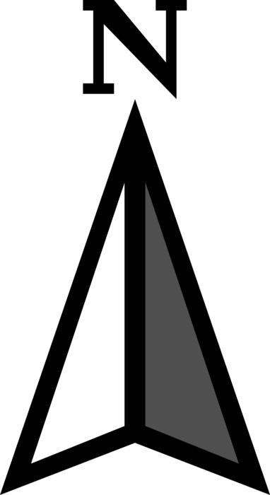

<!doctype html>
<html lang="en">

<head>
    <meta charset="utf-8">
    <meta http-equiv="X-UA-Compatible" content="IE=edge">
    <meta name="viewport" content="initial-scale=1,user-scalable=no,maximum-scale=1,width=device-width">
    <meta name="mobile-web-app-capable" content="yes">
    <meta name="apple-mobile-web-app-capable" content="yes">
    <link rel="stylesheet" href="css/leaflet.css">
    <link rel="stylesheet" href="css/L.Control.BetterScale.css">
    <link rel="stylesheet" href="css/qgis2web.css">
    <link rel="stylesheet" href="css/fontawesome-all.min.css">
    <link rel="stylesheet" href="css/leaflet-control-geocoder.Geocoder.css">
    <link rel="stylesheet" href="css/custom-style.css">
    <title>Lower Dudhkoshi SDI</title>
</head>

<body>
    <div id="map">
    </div>
    <script src="js/qgis2web_expressions.js"></script>
    <script src="js/leaflet.js"></script>
    <script src="js/leaflet-svg-shape-markers.min.js"></script>
    <script src="js/leaflet.rotatedMarker.js"></script>
    <script src="js/leaflet.pattern.js"></script>
    <script src="js/leaflet-hash.js"></script>
    <script src="js/Autolinker.min.js"></script>
    <script src="js/rbush.min.js"></script>
    <script src="js/labelgun.min.js"></script>
    <script src="js/labels.js"></script>
    <script src="js/leaflet-control-geocoder.Geocoder.js"></script>
    <script src="js/L.Control.BetterScale.js"></script>
    <script src="data/LowerDudhkoshiWatershed_1.js"></script>
    <script src="data/WardBoundary_13.js"></script>
    <script src="data/PalikaBoundary_14.js"></script>
    <script src="data/DistrictBoundary_15.js"></script>
    <script src="data/DudhkoshiMajorTributaries_16.js"></script>
    <script src="data/DudhkoshiRiver_17.js"></script>
    <script src="data/MajorVillages_18.js"></script>
    <script src="data/HydrologicalStations_19.js"></script>
    <script src="data/MeteorologicalStations_20.js"></script>
    <script>

        // Initialize map 
        var map = L.map('map', {
            zoomControl: true, maxZoom: 28, minZoom: 1
        }).fitBounds([[27.08998689982838, 86.33195189800918], [27.499870863750903, 87.0588190185415]]);

        // Add dynamic URL hashes using leaflet-hash.js
        var hash = new L.Hash(map);

        // Add attribution to the lower right corner of map
        map.attributionControl.setPrefix('<a href="https://github.com/tomchadwin/qgis2web" target="_blank">qgis2web</a> &middot; <a href="https://leafletjs.com" title="A JS library for interactive maps">Leaflet</a> &middot; <a href="https://qgis.org">QGIS</a>');

        // Autolinker.js
        var autolinker = new Autolinker({ truncate: { length: 30, location: 'smart' } });

        //Create a group of all layers
        var bounds_group = new L.featureGroup([]);

        // function setBounds() {
        // }

        // Add graphical scale at bottomleft corner using leaflet-betterscale
        L.control.betterscale({
            metric: true,
            imperial: false
        }).addTo(map);


        //Add north arrow
        var north = L.control({position:'topright'});
        north.onAdd = function(map){
            var div = L.DomUtil.create("div", "north-arrow");
            div.innerHTML = '';
            return div;
        };
        north.addTo(map);

        // Add OpenStreetMap basemap as the bottom layer (low z-index = bottom layer)
        map.createPane('pane_OpenStreetMapBasemap_0');
        map.getPane('pane_OpenStreetMapBasemap_0').style.zIndex = 400;
        var layer_OpenStreetMapBasemap_0 = L.tileLayer('http://tile.openstreetmap.org/{z}/{x}/{y}.png', {
            pane: 'pane_OpenStreetMapBasemap_0',
            opacity: 1.0,
            attribution: '<a href="https://www.openstreetmap.org/copyright">© OpenStreetMap contributors, CC-BY-SA</a>',
            minZoom: 1,
            maxZoom: 28,
            minNativeZoom: 0,
            maxNativeZoom: 19
        });
        // layer_OpenStreetMapBasemap_0;
        map.addLayer(layer_OpenStreetMapBasemap_0);

        // Define a function to highlight features of GeoJSON on hovering
        var highlightLayer;
        function highlightFeature(e) {
            highlightLayer = e.target;

            if (e.target.feature.geometry.type === 'LineString') {
                highlightLayer.setStyle({
                    color: '#09b10c',
                });
            } else {
                highlightLayer.setStyle({
                    fillColor: '#09b10c',
                    fillOpacity: 0.3
                });
            }
        }

        // Add Lower Dudhkoshi boundary layer
        function style_LowerDudhkoshiWatershed_1_0() {
            return {
                pane: 'pane_LowerDudhkoshiWatershed_1',
                stroke: false,
                fill: true,
                fillOpacity: 1,
                fillColor: 'rgba(142,241,137,0.5019607843137255)',
                interactive: false,
            }
        }
        map.createPane('pane_LowerDudhkoshiWatershed_1');
        map.getPane('pane_LowerDudhkoshiWatershed_1').style.zIndex = 401;
        map.getPane('pane_LowerDudhkoshiWatershed_1').style['mix-blend-mode'] = 'normal';
        var layer_LowerDudhkoshiWatershed_1 = new L.geoJson(json_LowerDudhkoshiWatershed_1, {
            attribution: '',
            interactive: false,
            dataVar: 'json_LowerDudhkoshiWatershed_1',
            layerName: 'layer_LowerDudhkoshiWatershed_1',
            pane: 'pane_LowerDudhkoshiWatershed_1',
            style: style_LowerDudhkoshiWatershed_1_0,
        });
        bounds_group.addLayer(layer_LowerDudhkoshiWatershed_1);
        map.addLayer(layer_LowerDudhkoshiWatershed_1);

        // Add Palika-wise risk map as an image layer
        map.createPane('pane_PalikawiseRIskMap_2');
        map.getPane('pane_PalikawiseRIskMap_2').style.zIndex = 402;
        var img_PalikawiseRIskMap_2 = 'data/PalikawiseRIskMap_2.png';
        var img_bounds_PalikawiseRIskMap_2 = [[27.145978680754908, 86.42939534088181], [27.439916592696353, 86.98433861282665]];
        var layer_PalikawiseRIskMap_2 = new L.imageOverlay(img_PalikawiseRIskMap_2,
            img_bounds_PalikawiseRIskMap_2,
            { pane: 'pane_PalikawiseRIskMap_2' });
        bounds_group.addLayer(layer_PalikawiseRIskMap_2);

        // Add classified multi-hazard map as an image layer
        map.createPane('pane_ClassifiedMultihazardMap_3');
        map.getPane('pane_ClassifiedMultihazardMap_3').style.zIndex = 403;
        var img_ClassifiedMultihazardMap_3 = 'data/ClassifiedMultihazardMap_3.png';
        var img_bounds_ClassifiedMultihazardMap_3 = [[27.145685112926557, 86.42930629590349], [27.44007479371397, 86.98445249337823]];
        var layer_ClassifiedMultihazardMap_3 = new L.imageOverlay(img_ClassifiedMultihazardMap_3,
            img_bounds_ClassifiedMultihazardMap_3,
            { pane: 'pane_ClassifiedMultihazardMap_3' });
        bounds_group.addLayer(layer_ClassifiedMultihazardMap_3);

        // Add multi-hazard map as an image layer
        map.createPane('pane_MultihazardMap_4');
        map.getPane('pane_MultihazardMap_4').style.zIndex = 404;
        var img_MultihazardMap_4 = 'data/MultihazardMap_4.png';
        var img_bounds_MultihazardMap_4 = [[27.145685112926557, 86.42930629590349], [27.44007479371397, 86.98445249337823]];
        var layer_MultihazardMap_4 = new L.imageOverlay(img_MultihazardMap_4,
            img_bounds_MultihazardMap_4,
            { pane: 'pane_MultihazardMap_4' });
        bounds_group.addLayer(layer_MultihazardMap_4);

        // Add normalized drought map as an image layer
        map.createPane('pane_NormalizedDroughtRiskMap_5');
        map.getPane('pane_NormalizedDroughtRiskMap_5').style.zIndex = 405;
        var img_NormalizedDroughtRiskMap_5 = 'data/NormalizedDroughtRiskMap_5.png';
        var img_bounds_NormalizedDroughtRiskMap_5 = [[27.144519393850036, 86.42930579075916], [27.44017333237338, 86.98788398182462]];
        var layer_NormalizedDroughtRiskMap_5 = new L.imageOverlay(img_NormalizedDroughtRiskMap_5,
            img_bounds_NormalizedDroughtRiskMap_5,
            { pane: 'pane_NormalizedDroughtRiskMap_5' });
        bounds_group.addLayer(layer_NormalizedDroughtRiskMap_5);

        // Add drought risk map as an image layer
        map.createPane('pane_DroughtRiskMap_6');
        map.getPane('pane_DroughtRiskMap_6').style.zIndex = 406;
        var img_DroughtRiskMap_6 = 'data/DroughtRiskMap_6.png';
        var img_bounds_DroughtRiskMap_6 = [[27.144519393850036, 86.42930579075916], [27.44017333237338, 86.98788398182462]];
        var layer_DroughtRiskMap_6 = new L.imageOverlay(img_DroughtRiskMap_6,
            img_bounds_DroughtRiskMap_6,
            { pane: 'pane_DroughtRiskMap_6' });
        bounds_group.addLayer(layer_DroughtRiskMap_6);

        // Add normalized landslide hazard map as an image layer
        map.createPane('pane_NormalizedLandslideHazardMap_7');
        map.getPane('pane_NormalizedLandslideHazardMap_7').style.zIndex = 407;
        var img_NormalizedLandslideHazardMap_7 = 'data/NormalizedLandslideHazardMap_7.png';
        var img_bounds_NormalizedLandslideHazardMap_7 = [[27.14568484117122, 86.42923857832295], [27.440177363503658, 86.98444010256638]];
        var layer_NormalizedLandslideHazardMap_7 = new L.imageOverlay(img_NormalizedLandslideHazardMap_7,
            img_bounds_NormalizedLandslideHazardMap_7,
            { pane: 'pane_NormalizedLandslideHazardMap_7' });
        bounds_group.addLayer(layer_NormalizedLandslideHazardMap_7);

        // Add landslide hazard map as an image layer
        map.createPane('pane_LandslideHazardMap_8');
        map.getPane('pane_LandslideHazardMap_8').style.zIndex = 408;
        var img_LandslideHazardMap_8 = 'data/LandslideHazardMap_8.png';
        var img_bounds_LandslideHazardMap_8 = [[27.14568484117122, 86.42923857832295], [27.440177363503658, 86.98444010256638]];
        var layer_LandslideHazardMap_8 = new L.imageOverlay(img_LandslideHazardMap_8,
            img_bounds_LandslideHazardMap_8,
            { pane: 'pane_LandslideHazardMap_8' });
        bounds_group.addLayer(layer_LandslideHazardMap_8);

        // Add normalized flood hazard map as an image layer
        map.createPane('pane_NormalizedFloodHazardMap_9');
        map.getPane('pane_NormalizedFloodHazardMap_9').style.zIndex = 409;
        var img_NormalizedFloodHazardMap_9 = 'data/NormalizedFloodHazardMap_9.png';
        var img_bounds_NormalizedFloodHazardMap_9 = [[27.144489075676617, 86.42924994905778], [27.440143235557912, 86.9878281327298]];
        var layer_NormalizedFloodHazardMap_9 = new L.imageOverlay(img_NormalizedFloodHazardMap_9,
            img_bounds_NormalizedFloodHazardMap_9,
            { pane: 'pane_NormalizedFloodHazardMap_9' });
        bounds_group.addLayer(layer_NormalizedFloodHazardMap_9);

        // Add flood hazard map as an image layer
        map.createPane('pane_FloodHazardDepthMap_10');
        map.getPane('pane_FloodHazardDepthMap_10').style.zIndex = 410;
        var img_FloodHazardDepthMap_10 = 'data/FloodHazardDepthMap_10.png';
        var img_bounds_FloodHazardDepthMap_10 = [[27.14618779193723, 86.43085379723199], [27.439778960832694, 86.98436639005322]];
        var layer_FloodHazardDepthMap_10 = new L.imageOverlay(img_FloodHazardDepthMap_10,
            img_bounds_FloodHazardDepthMap_10,
            { pane: 'pane_FloodHazardDepthMap_10' });
        bounds_group.addLayer(layer_FloodHazardDepthMap_10);

        // Add elevation map as an image layer
        map.createPane('pane_ElevationMap_11');
        map.getPane('pane_ElevationMap_11').style.zIndex = 411;
        var img_ElevationMap_11 = 'data/ElevationMap_11.png';
        var img_bounds_ElevationMap_11 = [[27.146187792, 86.430853797], [27.439778961, 86.98436639]];
        var layer_ElevationMap_11 = new L.imageOverlay(img_ElevationMap_11,
            img_bounds_ElevationMap_11,
            { pane: 'pane_ElevationMap_11' });
        bounds_group.addLayer(layer_ElevationMap_11);

        // Add EVI baseline map as an image layer
        map.createPane('pane_EnvironmentalVulnerabilityIndexBaseline_12');
        map.getPane('pane_EnvironmentalVulnerabilityIndexBaseline_12').style.zIndex = 412;
        var img_EnvironmentalVulnerabilityIndexBaseline_12 = 'data/EnvironmentalVulnerabilityIndexBaseline_12.png';
        var img_bounds_EnvironmentalVulnerabilityIndexBaseline_12 = [[27.145675000594913, 86.42680952344658], [27.440435884477505, 86.98418427468138]];
        var layer_EnvironmentalVulnerabilityIndexBaseline_12 = new L.imageOverlay(img_EnvironmentalVulnerabilityIndexBaseline_12,
            img_bounds_EnvironmentalVulnerabilityIndexBaseline_12,
            { pane: 'pane_EnvironmentalVulnerabilityIndexBaseline_12' });
        bounds_group.addLayer(layer_EnvironmentalVulnerabilityIndexBaseline_12);

        // Define popup functions for ward boundary layer
        function pop_WardBoundary_13(feature, layer) {
            layer.on({
                mouseout: function (e) {
                    for (i in e.target._eventParents) {
                        e.target._eventParents[i].resetStyle(e.target);
                    }
                },
                mouseover: highlightFeature,
            });
            var popupContent = '<table>\
                        <tr>\
                            <th scope="row">District</th>\
                            <td>' + (feature.properties['DISTRICT'] !== null ? autolinker.link(feature.properties['DISTRICT'].toLocaleString()) : '') + '</td>\
                        </tr>\
                        <tr>\
                            <th scope="row">Palika Name</th>\
                            <td>' + (feature.properties['GaPa_NaPa'] !== null ? autolinker.link(feature.properties['GaPa_NaPa'].toLocaleString()) : '') + '</td>\
                        </tr>\
                        <tr>\
                            <th scope="row">Palika Type</th>\
                            <td>' + (feature.properties['Type_GN'] !== null ? autolinker.link(feature.properties['Type_GN'].toLocaleString()) : '') + '</td>\
                        </tr>\
                        <tr>\
                            <th scope="row">Ward Number</th>\
                            <td>' + (feature.properties['NEW_WARD_N'] !== null ? autolinker.link(feature.properties['NEW_WARD_N'].toLocaleString()) : '') + '</td>\
                        </tr>\
                        <tr>\
                            <th scope="row">Ward Center</th>\
                            <td>' + (feature.properties['CENTER'] !== null ? autolinker.link(feature.properties['CENTER'].toLocaleString()) : '') + '</td>\
                        </tr>\
                        <tr>\
                            <th scope="row">Population Density</th>\
                            <td>' + (feature.properties['Pop_Densit'] !== null ? autolinker.link(feature.properties['Pop_Densit'].toLocaleString()) : '') + '</td>\
                        </tr>\
                        <tr>\
                            <th scope="row">Population (2011)</th>\
                            <td>' + (feature.properties['Popn_2011'] !== null ? autolinker.link(feature.properties['Popn_2011'].toLocaleString()) : '') + '</td>\
                        </tr>\
                    </table>';
            layer.bindPopup(popupContent, { maxHeight: 400 });
        }

        // Define style of ward boundary layer and add it to map
        function style_WardBoundary_13_0() {
            return {
                pane: 'pane_WardBoundary_13',
                opacity: 1,
                color: 'rgba(9,177,12,1.0)',
                dashArray: '',
                lineCap: 'butt',
                lineJoin: 'miter',
                weight: 2.0,
                fill: true,
                fillOpacity: 1,
                fillColor: 'rgba(145,82,45,0.0)',
                interactive: true,
            }
        }
        map.createPane('pane_WardBoundary_13');
        map.getPane('pane_WardBoundary_13').style.zIndex = 413;
        map.getPane('pane_WardBoundary_13').style['mix-blend-mode'] = 'normal';
        var layer_WardBoundary_13 = new L.geoJson(json_WardBoundary_13, {
            attribution: '',
            interactive: true,
            dataVar: 'json_WardBoundary_13',
            layerName: 'layer_WardBoundary_13',
            pane: 'pane_WardBoundary_13',
            onEachFeature: pop_WardBoundary_13,
            style: style_WardBoundary_13_0,
        });
        bounds_group.addLayer(layer_WardBoundary_13);
        map.addLayer(layer_WardBoundary_13);

        //Define popup functions for Palika boundary layer
        function pop_PalikaBoundary_14(feature, layer) {
            layer.on({
                mouseout: function (e) {
                    for (i in e.target._eventParents) {
                        e.target._eventParents[i].resetStyle(e.target);
                    }
                },
                mouseover: highlightFeature,
            });
            var popupContent = '<table>\
                        <tr>\
                            <th scope="row">District</th>\
                            <td>' + (feature.properties['FIRST_DIST'] !== null ? autolinker.link(feature.properties['FIRST_DIST'].toLocaleString()) : '') + '</td>\
                        </tr>\
                        <tr>\
                            <th scope="row">Palika Name</th>\
                            <td>' + (feature.properties['Palika Nam'] !== null ? autolinker.link(feature.properties['Palika Nam'].toLocaleString()) : '') + '</td>\
                        </tr>\
                        <tr>\
                            <th scope="row">Palika Type</th>\
                            <td>' + (feature.properties['Palika Typ'] !== null ? autolinker.link(feature.properties['Palika Typ'].toLocaleString()) : '') + '</td>\
                        </tr>\
                        <tr>\
                            <th scope="row">Land Use</th>\
                            <td>' + (feature.properties['LU_Type'] !== null ? autolinker.link(feature.properties['LU_Type'].toLocaleString()) : '') + '</td>\
                        </tr>\
                        <tr>\
                            <th scope="row">Risk</th>\
                            <td>' + (feature.properties['Risk'] !== null ? autolinker.link(feature.properties['Risk'].toLocaleString()) : '') + '</td>\
                        </tr>\
                        <tr>\
                            <th scope="row">Vulnerability</th>\
                            <td>' + (feature.properties['vulnerabil'] !== null ? autolinker.link(feature.properties['vulnerabil'].toLocaleString()) : '') + '</td>\
                        </tr>\
                    </table>';
            layer.bindPopup(popupContent, { maxHeight: 400 });
        }

        // Define style and add Palika boundary layer to map
        function style_PalikaBoundary_14_0() {
            return {
                pane: 'pane_PalikaBoundary_14',
                opacity: 1,
                color: 'rgba(227,15,19,1.0)',
                dashArray: '',
                lineCap: 'butt',
                lineJoin: 'miter',
                weight: 2.0,
                fill: true,
                fillOpacity: 1,
                fillColor: 'rgba(142,241,137,0.0)',
                interactive: true,
            }
        }
        map.createPane('pane_PalikaBoundary_14');
        map.getPane('pane_PalikaBoundary_14').style.zIndex = 414;
        map.getPane('pane_PalikaBoundary_14').style['mix-blend-mode'] = 'normal';
        var layer_PalikaBoundary_14 = new L.geoJson(json_PalikaBoundary_14, {
            attribution: '',
            interactive: true,
            dataVar: 'json_PalikaBoundary_14',
            layerName: 'layer_PalikaBoundary_14',
            pane: 'pane_PalikaBoundary_14',
            onEachFeature: pop_PalikaBoundary_14,
            style: style_PalikaBoundary_14_0,
        });
        bounds_group.addLayer(layer_PalikaBoundary_14);
        map.addLayer(layer_PalikaBoundary_14);

        //Add district boundary layer
        function style_DistrictBoundary_15_0() {
            return {
                pane: 'pane_DistrictBoundary_15',
                opacity: 1,
                color: 'rgba(35,35,35,1.0)',
                dashArray: '',
                lineCap: 'butt',
                lineJoin: 'miter',
                weight: 3.0,
                fill: true,
                fillOpacity: 1,
                fillColor: 'rgba(213,180,60,0.0)',
                interactive: false,
            }
        }
        map.createPane('pane_DistrictBoundary_15');
        map.getPane('pane_DistrictBoundary_15').style.zIndex = 415;
        map.getPane('pane_DistrictBoundary_15').style['mix-blend-mode'] = 'normal';
        var layer_DistrictBoundary_15 = new L.geoJson(json_DistrictBoundary_15, {
            attribution: '',
            interactive: false,
            dataVar: 'json_DistrictBoundary_15',
            layerName: 'layer_DistrictBoundary_15',
            pane: 'pane_DistrictBoundary_15',
            style: style_DistrictBoundary_15_0,
        });
        bounds_group.addLayer(layer_DistrictBoundary_15);
        map.addLayer(layer_DistrictBoundary_15);

        //Define popup functions for major tributaries layer
        function pop_DudhkoshiMajorTributaries_16(feature, layer) {
            layer.on({
                mouseout: function (e) {
                    for (i in e.target._eventParents) {
                        e.target._eventParents[i].resetStyle(e.target);
                    }
                },
                mouseover: highlightFeature,
            });
            var popupContent = '<table>\
                        <tr>\
                            <td colspan="2">' + (feature.properties['Riv_Name'] !== null ? autolinker.link(feature.properties['Riv_Name'].toLocaleString()) : '') + '</td>\
                        </tr>\
                    </table>';
            layer.bindPopup(popupContent, { maxHeight: 400 });
        }

        //Define style and add tributaries layer to map
        function style_DudhkoshiMajorTributaries_16_0() {
            return {
                pane: 'pane_DudhkoshiMajorTributaries_16',
                opacity: 1,
                color: 'rgba(33,82,243,1.0)',
                dashArray: '',
                lineCap: 'square',
                lineJoin: 'bevel',
                weight: 2.0,
                fillOpacity: 0,
                interactive: true,
            }
        }
        map.createPane('pane_DudhkoshiMajorTributaries_16');
        map.getPane('pane_DudhkoshiMajorTributaries_16').style.zIndex = 416;
        map.getPane('pane_DudhkoshiMajorTributaries_16').style['mix-blend-mode'] = 'normal';
        var layer_DudhkoshiMajorTributaries_16 = new L.geoJson(json_DudhkoshiMajorTributaries_16, {
            attribution: '',
            interactive: true,
            dataVar: 'json_DudhkoshiMajorTributaries_16',
            layerName: 'layer_DudhkoshiMajorTributaries_16',
            pane: 'pane_DudhkoshiMajorTributaries_16',
            onEachFeature: pop_DudhkoshiMajorTributaries_16,
            style: style_DudhkoshiMajorTributaries_16_0,
        });
        bounds_group.addLayer(layer_DudhkoshiMajorTributaries_16);

        //Define style and add Dudhkoshi river layer to map
        function style_DudhkoshiRiver_17_0() {
            return {
                pane: 'pane_DudhkoshiRiver_17',
                opacity: 1,
                color: 'rgba(18,11,143,1.0)',
                dashArray: '',
                lineCap: 'square',
                lineJoin: 'bevel',
                weight: 3.0,
                fillOpacity: 0,
                interactive: false,
            }
        }
        map.createPane('pane_DudhkoshiRiver_17');
        map.getPane('pane_DudhkoshiRiver_17').style.zIndex = 417;
        map.getPane('pane_DudhkoshiRiver_17').style['mix-blend-mode'] = 'normal';
        var layer_DudhkoshiRiver_17 = new L.geoJson(json_DudhkoshiRiver_17, {
            attribution: '',
            interactive: false,
            dataVar: 'json_DudhkoshiRiver_17',
            layerName: 'layer_DudhkoshiRiver_17',
            pane: 'pane_DudhkoshiRiver_17',
            style: style_DudhkoshiRiver_17_0,
        });
        bounds_group.addLayer(layer_DudhkoshiRiver_17);
        map.addLayer(layer_DudhkoshiRiver_17);

        //Define popup functions for major villages layer
        function pop_MajorVillages_18(feature, layer) {
            layer.on({
                mouseout: function (e) {
                    for (i in e.target._eventParents) {
                        e.target._eventParents[i].resetStyle(e.target);
                    }
                },
                mouseover: highlightFeature,
            });
            var popupContent = '<table>\
                    <tr>\
                        <td colspan="2">' + (feature.properties['VIL_NAME'] !== null ? autolinker.link(feature.properties['VIL_NAME'].toLocaleString()) : '') + '</td>\
                    </tr>\
                </table>';
            layer.bindPopup(popupContent, { maxHeight: 400 });
        }

        //Define style and add major villages layer to map
        function style_MajorVillages_18_0() {
            return {
                pane: 'pane_MajorVillages_18',
                shape: 'triangle',
                radius: 4.8,
                opacity: 1,
                color: 'rgba(35,35,35,1.0)',
                dashArray: '',
                lineCap: 'butt',
                lineJoin: 'miter',
                weight: 1,
                fill: true,
                fillOpacity: 1,
                fillColor: 'rgba(102,5,27,1.0)',
                interactive: true,
            }
        }
        map.createPane('pane_MajorVillages_18');
        map.getPane('pane_MajorVillages_18').style.zIndex = 418;
        map.getPane('pane_MajorVillages_18').style['mix-blend-mode'] = 'normal';
        var layer_MajorVillages_18 = new L.geoJson(json_MajorVillages_18, {
            attribution: '',
            interactive: true,
            dataVar: 'json_MajorVillages_18',
            layerName: 'layer_MajorVillages_18',
            pane: 'pane_MajorVillages_18',
            onEachFeature: pop_MajorVillages_18,
            pointToLayer: function (feature, latlng) {
                var context = {
                    feature: feature,
                    variables: {}
                };
                return L.shapeMarker(latlng, style_MajorVillages_18_0(feature));
            },
        });
        bounds_group.addLayer(layer_MajorVillages_18);
        map.addLayer(layer_MajorVillages_18);

        //Define popup functions for hydrological stations layer
        function pop_HydrologicalStations_19(feature, layer) {
            layer.on({
                mouseout: function (e) {
                    for (i in e.target._eventParents) {
                        e.target._eventParents[i].resetStyle(e.target);
                    }
                },
                mouseover: highlightFeature,
            });
            var popupContent = '<table>\
                    <tr>\
                        <th scope="row">River Name</th>\
                        <td>' + (feature.properties['Name_river'] !== null ? autolinker.link(feature.properties['Name_river'].toLocaleString()) : '') + '</td>\
                    </tr>\
                    <tr>\
                        <th scope="row">Location</th>\
                        <td>' + (feature.properties['Location'] !== null ? autolinker.link(feature.properties['Location'].toLocaleString()) : '') + '</td>\
                    </tr>\
                    <tr>\
                        <th scope="row">Latitude</th>\
                        <td>' + (feature.properties['Lat'] !== null ? autolinker.link(feature.properties['Lat'].toLocaleString()) : '') + '</td>\
                    </tr>\
                    <tr>\
                        <th scope="row">Longitude</th>\
                        <td>' + (feature.properties['Long'] !== null ? autolinker.link(feature.properties['Long'].toLocaleString()) : '') + '</td>\
                    </tr>\
                    <tr>\
                        <th scope="row">Elev_m</th>\
                        <td>' + (feature.properties['Elev_m'] !== null ? autolinker.link(feature.properties['Elev_m'].toLocaleString()) : '') + '</td>\
                    </tr>\
                    <tr>\
                        <th scope="row">Drainage Area</th>\
                        <td>' + (feature.properties['Drainage_A'] !== null ? autolinker.link(feature.properties['Drainage_A'].toLocaleString()) : '') + '</td>\
                    </tr>\
                </table>';
            layer.bindPopup(popupContent, { maxHeight: 400 });
        }

        //Define style and add hydrological stations layer to map
        function style_HydrologicalStations_19_0() {
            return {
                pane: 'pane_HydrologicalStations_19',
                radius: 6.0,
                opacity: 1,
                color: 'rgba(35,35,35,1.0)',
                dashArray: '',
                lineCap: 'butt',
                lineJoin: 'miter',
                weight: 1,
                fill: true,
                fillOpacity: 1,
                fillColor: 'rgba(10,239,243,1.0)',
                interactive: true,
            }
        }
        map.createPane('pane_HydrologicalStations_19');
        map.getPane('pane_HydrologicalStations_19').style.zIndex = 419;
        map.getPane('pane_HydrologicalStations_19').style['mix-blend-mode'] = 'normal';
        var layer_HydrologicalStations_19 = new L.geoJson(json_HydrologicalStations_19, {
            attribution: '',
            interactive: true,
            dataVar: 'json_HydrologicalStations_19',
            layerName: 'layer_HydrologicalStations_19',
            pane: 'pane_HydrologicalStations_19',
            onEachFeature: pop_HydrologicalStations_19,
            pointToLayer: function (feature, latlng) {
                var context = {
                    feature: feature,
                    variables: {}
                };
                return L.circleMarker(latlng, style_HydrologicalStations_19_0(feature));
            },
        });
        bounds_group.addLayer(layer_HydrologicalStations_19);
        map.addLayer(layer_HydrologicalStations_19);

        //Define popup functions for meteorological stations layer
        function pop_MeteorologicalStations_20(feature, layer) {
            layer.on({
                mouseout: function (e) {
                    for (i in e.target._eventParents) {
                        e.target._eventParents[i].resetStyle(e.target);
                    }
                },
                mouseover: highlightFeature,
            });
            var popupContent = '<table>\
                    <tr>\
                        <th scope="row">Station Name</th>\
                        <td>' + (feature.properties['Station_Na'] !== null ? autolinker.link(feature.properties['Station_Na'].toLocaleString()) : '') + '</td>\
                    </tr>\
                    <tr>\
                        <th scope="row">Station Type</th>\
                        <td>' + (feature.properties['Type'] !== null ? autolinker.link(feature.properties['Type'].toLocaleString()) : '') + '</td>\
                    </tr>\
                    <tr>\
                        <th scope="row">Location</th>\
                        <td>' + (feature.properties['Location'] !== null ? autolinker.link(feature.properties['Location'].toLocaleString()) : '') + '</td>\
                    </tr>\
                    <tr>\
                        <th scope="row">Latitude</th>\
                        <td>' + (feature.properties['Lat'] !== null ? autolinker.link(feature.properties['Lat'].toLocaleString()) : '') + '</td>\
                    </tr>\
                    <tr>\
                        <th scope="row">Longitude</th>\
                        <td>' + (feature.properties['Long'] !== null ? autolinker.link(feature.properties['Long'].toLocaleString()) : '') + '</td>\
                    </tr>\
                    <tr>\
                        <th scope="row">Elevation</th>\
                        <td>' + (feature.properties['Elevation'] !== null ? autolinker.link(feature.properties['Elevation'].toLocaleString()) : '') + '</td>\
                    </tr>\
                    <tr>\
                        <th scope="row">Station Index</th>\
                        <td>' + (feature.properties['int-index'] !== null ? autolinker.link(feature.properties['int-index'].toLocaleString()) : '') + '</td>\
                    </tr>\
                </table>';
            layer.bindPopup(popupContent, { maxHeight: 400 });
        }

        // Define style for meteorological stations layer and add it to map
        function style_MeteorologicalStations_20_0() {
            return {
                pane: 'pane_MeteorologicalStations_20',
                radius: 4.8,
                opacity: 1,
                color: 'rgba(35,35,35,1.0)',
                dashArray: '',
                lineCap: 'butt',
                lineJoin: 'miter',
                weight: 1,
                fill: true,
                fillOpacity: 1,
                fillColor: 'rgba(255,0,0,1.0)',
                interactive: true,
            }
        }
        map.createPane('pane_MeteorologicalStations_20');
        map.getPane('pane_MeteorologicalStations_20').style.zIndex = 420;
        map.getPane('pane_MeteorologicalStations_20').style['mix-blend-mode'] = 'normal';
        var layer_MeteorologicalStations_20 = new L.geoJson(json_MeteorologicalStations_20, {
            attribution: '',
            interactive: true,
            dataVar: 'json_MeteorologicalStations_20',
            layerName: 'layer_MeteorologicalStations_20',
            pane: 'pane_MeteorologicalStations_20',
            onEachFeature: pop_MeteorologicalStations_20,
            pointToLayer: function (feature, latlng) {
                var context = {
                    feature: feature,
                    variables: {}
                };
                return L.circleMarker(latlng, style_MeteorologicalStations_20_0(feature));
            },
        });
        bounds_group.addLayer(layer_MeteorologicalStations_20);
        map.addLayer(layer_MeteorologicalStations_20);

        // Add search button in the topleft
        var osmGeocoder = new L.Control.Geocoder({
            collapsed: true,
            position: 'topleft',
            text: 'Search',
            title: 'Testing'
        }).addTo(map);

        // Add search icon on the topright
        document.getElementsByClassName('leaflet-control-geocoder-icon')[0]
            .className += ' fa fa-search';
        document.getElementsByClassName('leaflet-control-geocoder-icon')[0]
            .title += 'Search for a place';

        // Only one basemap can be selected by a user at a time, so store all raster layers as basemaps and remaining as overlaymaps
        var baseMaps = {
            "Environmental Vulnerability Index Baseline": layer_EnvironmentalVulnerabilityIndexBaseline_12, 
            "Elevation Map": layer_ElevationMap_11, 
            "Flood Hazard (Depth) Map": layer_FloodHazardDepthMap_10, 
            "Normalized Flood Hazard Map": layer_NormalizedFloodHazardMap_9, 
            "Landslide Hazard Map": layer_LandslideHazardMap_8, 
            "Normalized Landslide Hazard Map": layer_NormalizedLandslideHazardMap_7, 
            "Drought Risk Map": layer_DroughtRiskMap_6, 
            "Normalized Drought Risk Map": layer_NormalizedDroughtRiskMap_5, 
            "Multihazard Map": layer_MultihazardMap_4, 
            "Classified Multihazard Map": layer_ClassifiedMultihazardMap_3, 
            "Palika-wise RIsk Map": layer_PalikawiseRIskMap_2, 
            ' Lower Dudhkoshi Watershed': layer_LowerDudhkoshiWatershed_1
        };

        var overlayMaps = {
            ' Meteorological Stations': layer_MeteorologicalStations_20, 
            ' Hydrological Stations': layer_HydrologicalStations_19, 
            ' Major Villages': layer_MajorVillages_18, 
            ' Dudhkoshi River': layer_DudhkoshiRiver_17, 
            ' Dudhkoshi Major Tributaries': layer_DudhkoshiMajorTributaries_16, 
            ' District Boundary': layer_DistrictBoundary_15, 
            ' Palika Boundary': layer_PalikaBoundary_14, 
            ' Ward Boundary': layer_WardBoundary_13,  
            "OpenStreetMap Basemap": layer_OpenStreetMapBasemap_0
        };

        // Add layer control on the topleft
        var layerControl = L.control.layers(baseMaps, overlayMaps).addTo(map);
        layerControl.setPosition('topleft');
        // setBounds();

        //Add labels of Palika and district layers
        var i = 0;
        layer_PalikaBoundary_14.eachLayer(function (layer) {
            var context = {
                feature: layer.feature,
                variables: {}
            };
            layer.bindTooltip((layer.feature.properties['Palika Nam'] !== null ? String('<div style="color: #fff; text-shadow: 1px 0 0 #000, 0 -1px 0 #000, 0 1px 0 #000, -1px 0 0 #000; font-size: 8pt; font-weight: bold; font-family: \'Liberation Sans\', sans-serif;">' + layer.feature.properties['Palika Nam']) + '</div>' : ''), { permanent: true, offset: [-0, -16], className: 'css_PalikaBoundary_14' });
            labels.push(layer);
            totalMarkers += 1;
            layer.added = true;
            addLabel(layer, i);
            i++;
        });
        var i = 0;
        layer_DistrictBoundary_15.eachLayer(function (layer) {
            var context = {
                feature: layer.feature,
                variables: {}
            };
            layer.bindTooltip((layer.feature.properties['DISTRICT'] !== null ? String('<div style="color: #323232; font-size: 14pt; font-weight: bold; font-style: italic; font-family: \'Liberation Sans\', sans-serif;">' + layer.feature.properties['DISTRICT']) + '</div>' : ''), { permanent: true, offset: [-0, -16], className: 'css_DistrictBoundary_15' });
            labels.push(layer);
            totalMarkers += 1;
            layer.added = true;
            addLabel(layer, i);
            i++;
        });
        L.ImageOverlay.include({
            getBounds: function () {
                return this._bounds;
            }
        });

        //Reset labels after every zoom action, layer addition or layer removal
        function labelReset(){
            resetLabels([layer_PalikaBoundary_14, layer_DistrictBoundary_15]);
        };

        labelReset();
        map.on("zoomend", labelReset);
        map.on("layeradd", labelReset);
        map.on("layerremove", labelReset);

        //Initialize active layers
        var activeBase = ' Lower Dudhkoshi Watershed';

        var activeOverlays = [
            ' Meteorological Stations',
            ' Hydrological Stations',
            ' Major Villages',
            ' Dudhkoshi River',
            ' District Boundary',
            ' Palika Boundary',
            ' Ward Boundary',
            'OpenStreetMap Basemap'
        ];
        activeOverlays.sort();

        // Create an object mapping layer name to legend html code
        var layertoLegend = {
            "Environmental Vulnerability Index Baseline": 'Environmental Vulnerability Index <br> <i style="background:#f7fcf5"></i>' + '1.771 <br> <i style="background:#00441b"></i> 5.734', 
            "Elevation Map": '', 
            "Flood Hazard (Depth) Map": '', 
            "Normalized Flood Hazard Map": '', 
            "Landslide Hazard Map": '', 
            "Normalized Landslide Hazard Map": '', 
            "Drought Risk Map": '', 
            "Normalized Drought Risk Map": '', 
            "Multihazard Map": '', 
            "Classified Multihazard Map": '', 
            "Palika-wise RIsk Map": '', 
            ' Lower Dudhkoshi Watershed': ' Lower Dudhkoshi Watershed',
            ' Meteorological Stations': ' Meteorological Stations', 
            ' Hydrological Stations': ' Hydrological Stations', 
            ' Major Villages': ' Major Villages', 
            ' Dudhkoshi River': ' Dudhkoshi River', 
            ' Dudhkoshi Major Tributaries': ' Dudhkoshi Major Tributaries', 
            ' District Boundary': ' District Boundary', 
            ' Palika Boundary': ' Palika Boundary', 
            ' Ward Boundary': ' Ward Boundary',  
            "OpenStreetMap Basemap": 'OpenStreetMap Basemap'
        };

        //Create a control for showing legend on the bottomright
        var legendControl = L.control({position:'bottomright'});
        legendControl.onAdd = function(map) {
            this._div = L.DomUtil.create('div', 'legend');
            // this._div.innerHTML = '<h4>Legend</h4>';
            // this._div.innerHTML += ' Lower Dudhkoshi Watershed';
            this.update();
            return this._div;
        };

        // Define a function that takes activeBase and activeOverlays and returns full innerHTML of legendControl
        function activetoHTML(){
            innerHtml = '<h4> Legend </h4>';
            innerHtml += layertoLegend[activeBase] + '<br>';
            for (var i=0; i<activeOverlays.length; i++){
                innerHtml += layertoLegend[activeOverlays[i]] + '<br>';
            };
            return innerHtml;
        }

        legendControl.update = function (){
            this._div.innerHTML = activetoHTML();
        }

        legendControl.addTo(map);

        // Change legend everytime layer selection is changed by user
        map.on("baselayerchange", function(e){
            activeBase = e.name;
            legendControl.update();
        });

        map.on("overlayadd", function(e){
            activeOverlays.push(e.name);
            activeOverlays.sort();
            legendControl.update();
        });

        map.on("overlayremove", function(e){
            console.log(overlayMaps[e.name]);
            var index = activeOverlays.indexOf(e.name);
            activeOverlays.splice(index, 1);
            legendControl.update();
        });

        // L.control.mousePosition().addTo(map);
    </script>
</body>

</html>